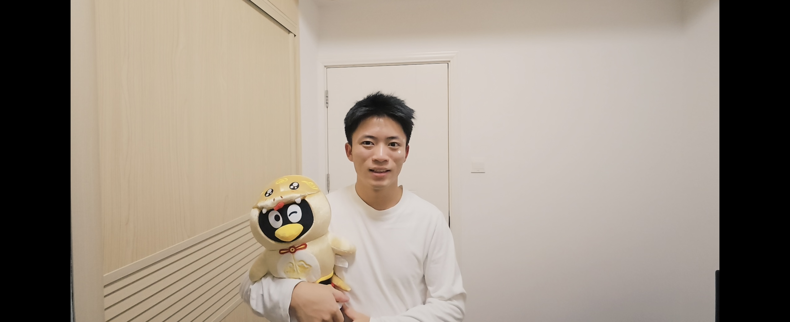

The initial stage was filled with frustration and confusion
All beginnings are like this.

I hope my future will be filled with more happiness.
Hi, I am employed at Contemporary Amperex Technology Co., Limited (CATL) (September 2024-present) as an Engineer, primarily responsible for database and AI-related work. I earned my Bachelor's degree from Jimei University (2020-2024) and joined the Intelligent Hardware & High-Performance Computing Lab in 2021, under the supervision of Prof. Xu.
During my studies, I interned at several institutions, including:
Xiamen Milesight IoT Co., Ltd. - R&D Department (July-September 2023) as a Development Engineer (Intern)
Xiaomi Corporation - Mobile/Software Department (March-May 2024) as a Software R&D Engineer (Intern)
The Tencent Story
How to master project management
* It might not be perfect or 'correct,' but it's authentically mine
I didn't waste my time in university. (All my time in the laboratory and the library)
Database, Computer Vision, and Large Model Applications
AI Data Center, Claude code, and Energy solutions
* While life can be routine, it's important to discover the sparks of joy